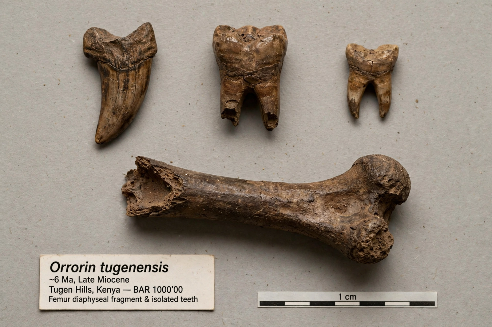

Orrorin

Orrorin
| Temporal range | Late Miocene, about 6.1–5.7 million years ago |
|---|---|
| Type species | Orrorin tugenensis Senut et al., 2001 |
| Known from | Lukeino Formation, Tugen Hills, Kenya |
| Family | Hominidae |
Orrorin is a genus of early hominid known from the Late Miocene Lukeino Formation of the Tugen Hills in Baringo County, Kenya. Its only species, Orrorin tugenensis, lived approximately 6 million years ago. The fossils were discovered in 2000 by Brigitte Senut and Martin Pickford of the Muséum national d'histoire naturelle, Paris, and were announced in 2001; the popular press dubbed the find "Millennium Man". The name Orrorin means "original man" in the Tugen language.
Discovery and material
The known material comprises about twenty fossils from at least five individuals, recovered at four sites in the Lukeino Formation, dated by radiometric methods to between about 6.1 and 5.7 million years ago. The specimens include fragments of jaw with teeth, isolated upper and lower teeth, a partial humerus, a finger bone, and — most importantly for locomotor interpretation — three fragments of femur, including a nearly complete left femoral shaft.
Description and locomotion
Orrorin was roughly the size of a modern chimpanzee. Its teeth are relatively small by later hominin standards but its molar enamel is thick, and its canines are ape-like but reduced. The curved finger bone and the humerus suggest it was still a capable climber, but Senut and Pickford argued from the anatomy of the femur — in particular the distribution of cortical bone in the femoral neck, thicker below than above — that Orrorin habitually walked bipedally when on the ground. Later CT-based analyses have supported this interpretation, though the claim remains one strand in the wider debate over when bipedalism originated.
Significance
Dating to within roughly a million years of the estimated human–chimpanzee divergence, Orrorin is one of the three candidate earliest hominin genera, alongside the slightly older Sahelanthropus from Chad and the younger Ardipithecus from Ethiopia. Its discoverers controversially proposed that Orrorin was a direct ancestor of modern humans and that australopithecines were a side branch, a hypothesis most palaeoanthropologists have not accepted. The fossils also showed that early hominins lived in wooded environments, challenging the classic "savanna hypothesis" for the origin of bipedalism.
See also: Sahelanthropus · Ardipithecus · Human evolution · Tugen Hills